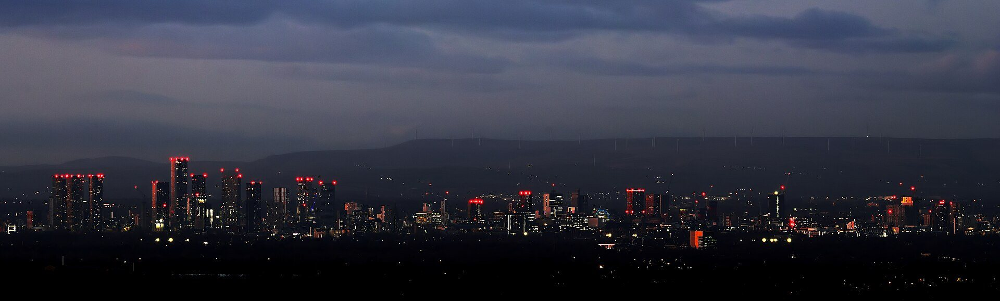

01 · The street
Walk with us. The city glows at the end of the street.
02 · The address
The address does half the letting. Presentation does the rest.
03 · The doors
Every Megacity home can be walked like this — in 360°, before any viewing.
04 · The corridor
Inspected, certified, cared for — all the way to the front door.
05 · Home
Professional letting · trusted management, across Manchester & Salford.
Scroll
Hero Lab
A scroll-driven journey — skyline, tower, threshold, home — built on the existing GSAP + ScrollTrigger + canvas stack, with the same fallbacks as the live hero. Nothing on the live site has been changed.
Skyline © LimeSpiked · CC BY 2.0 · Beetham Tower © JThomas · CC BY-SA 2.0 · Interior via Unsplash